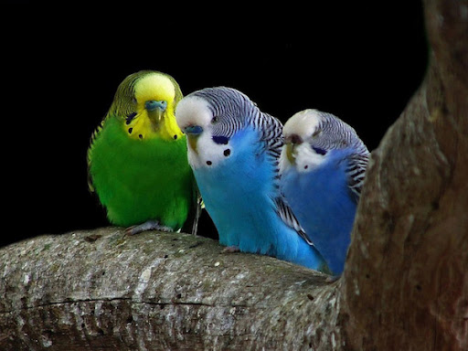
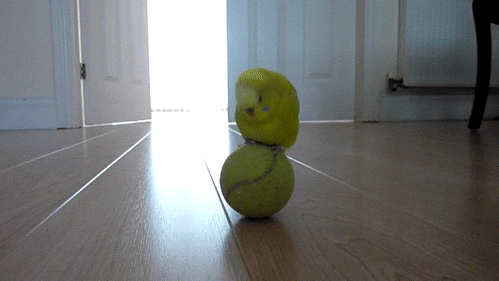

 
The Great Treasure At some point during the Void Century, a man named Joy Boy came across an island located at the end of the Grand Line. Here, he left behind a treasure of unimaginable value.[2] Stories of this treasure on the final island peaked the interest of Gol D. Roger, and he took the World Government forbidding exploration of the island as evidence of it being real.[3] Only the members of the Roger Pirates that journeyed to the island know what exactly the treasure consists of. Upon arriving on the island and seeing Joy Boy's treasure, the Roger Pirates simply began to laugh. Roger described it as a "tale full of laughs", which gave him the idea to name the final island "Laugh Tale".[2] Sometime after the Roger Pirates' discovery, the world at large would begin to refer to the enigmatic treasure as the "One Piece".[1] Before Roger was executed, he announced to the world that this great treasure could be claimed by anyone who could reach it, thereby starting the Great Age of Pirates. The closest the Straw Hat Pirates have ever come to finding out the nature of One Piece was during the Sabaody Archipelago Arc, when Usopp tried to ask Silvers Rayleigh about it. However, Luffy stopped him on the grounds that learning about it from someone else would defeat the purpose of their adventures and that becoming the Pirate King would have little merit if he already knew anything about One Piece.[4] After decades of speculations and doubts, the treasure's existence was confirmed by Whitebeard with his last breath. He mentioned that "a grand battle will engulf the entire world" and "the world will be shaken to its core" when One Piece is found.[5]